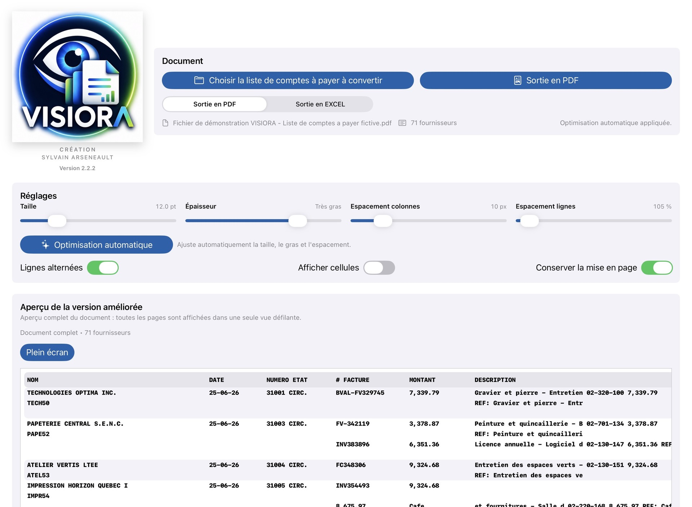
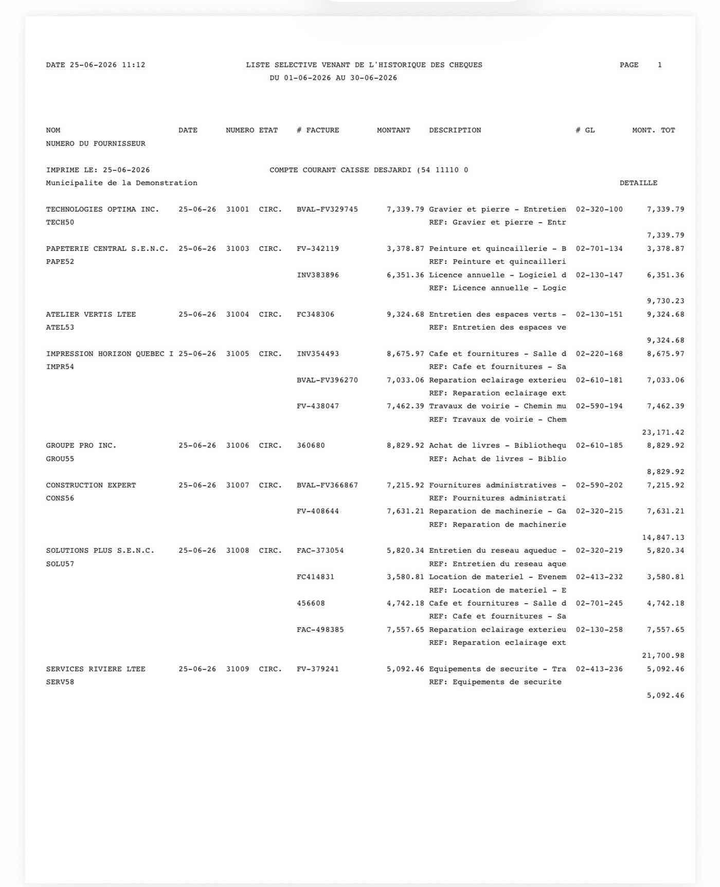
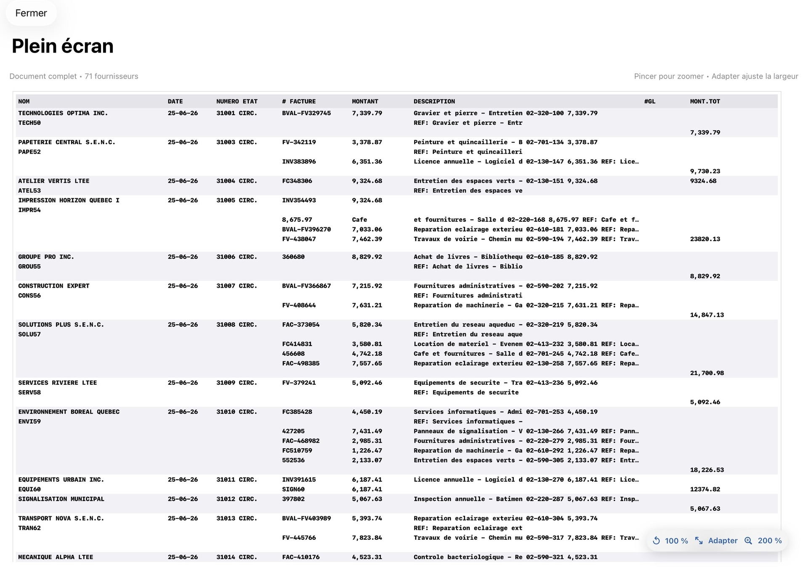
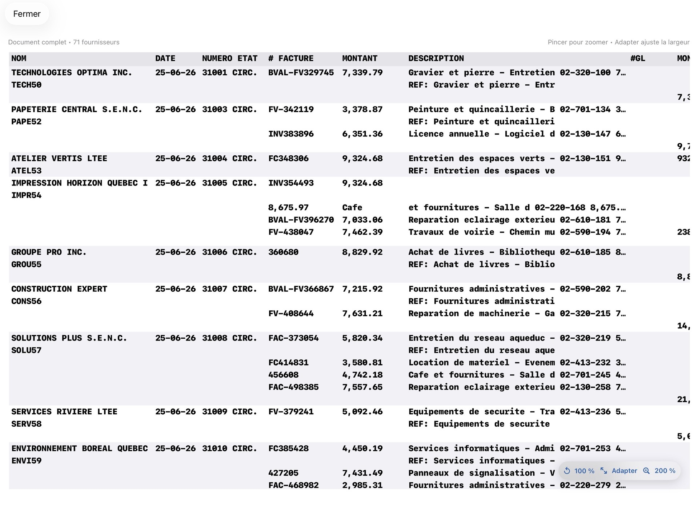

Affichage personnalisé
Ajustement de la taille, de l’épaisseur des caractères et de l’espacement.

Une application conçue pour rendre les rapports PDF structurés plus clairs, plus lisibles et plus accessibles.
Rendre les rapports PDF structurés plus clairs, plus lisibles et plus accessibles, notamment pour les personnes ayant des difficultés visuelles.
Des outils simples pour améliorer la consultation du rapport compatible et produire une nouvelle sortie adaptée à vos besoins.
Ajustement de la taille, de l’épaisseur des caractères et de l’espacement.
Les informations du rapport sont réorganisées dans un tableau plus facile à consulter.
Une fois le rapport traité, exportez le résultat final en fichier PDF ou Excel selon vos besoins.
Chaque étape a été pensée pour rester claire et rapide.
Sélectionnez la liste de comptes à payer compatible.
VISIORA reconnaît et réorganise les données localement.
Examinez le rapport structuré et zoomez sur chaque détail.
Produisez le résultat final en PDF ou en Excel.
Découvrez le parcours complet à partir d’un rapport fictif conçu pour la démonstration.
VISIORA affiche le document et permet d’ajuster la présentation avant de consulter le résultat traité.

Un rapport comptable traditionnel, dense et difficile à parcourir rapidement.

Une présentation claire, structurée et immédiatement plus confortable à consulter.
Le résultat final peut ensuite être exporté en fichier PDF ou Excel.

Le rapport demeure entièrement zoomable après le traitement pour examiner facilement un fournisseur, une facture ou un montant.

VISIORA est actuellement spécialisée pour un modèle précis. D’autres formats pourront être ajoutés progressivement.
Rapport produit par la Municipalité de Saint-Boniface.
D’autres rapports PDF structurés pourront être ajoutés dans de prochaines versions.
VISIORA s’adresse aux équipes qui doivent lire, vérifier et présenter des rapports comptables structurés.
Pour faciliter la consultation des listes de comptes à payer et soutenir la prise de décision.
Pour repérer rapidement les fournisseurs, factures, montants et descriptions.
Pour ajuster la présentation et consulter le document dans un format plus confortable.
Confidentielle, locale et conçue pour les appareils Apple.